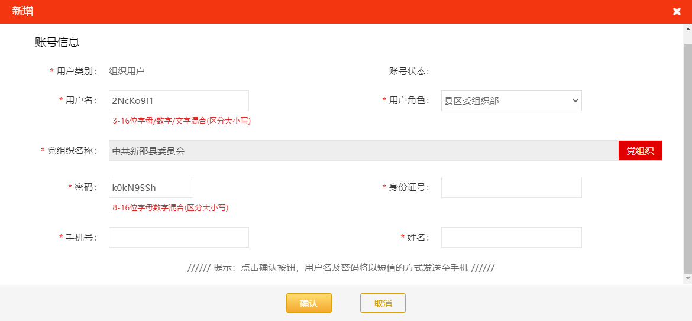
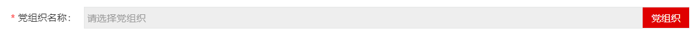
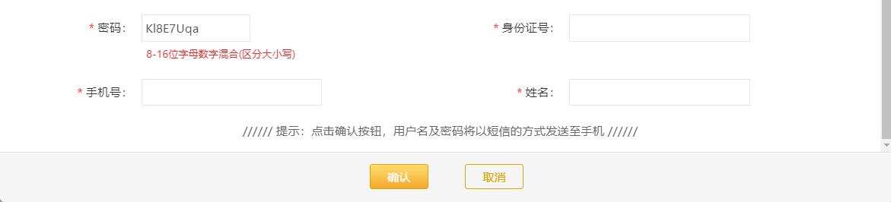
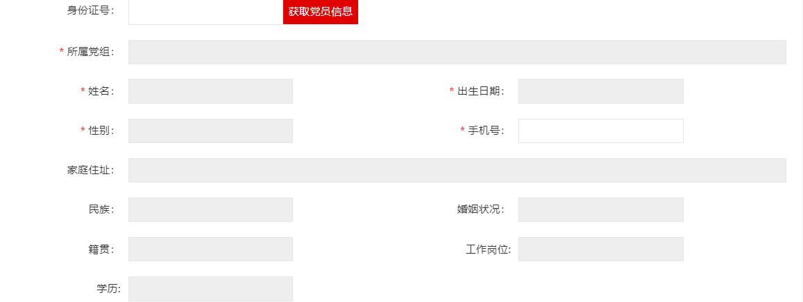
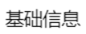

党建指导员用户




在党组织用户新增模块基础上改，区别是：
1、用户角色可选择党建指导员用户
2、新增页面输入身份证号
a.先与本组织内有效的党建指导员用户比对，若已创建账号，则鼠标失焦或点击确认时layer提示“该党建指导员用户已存在”
b.若a不成立，与本组织内的未创建账号的党建指导员库比对，若比对上，则鼠标失焦后能获取相关党员信息；若比对不上，则鼠标失焦后或点击确认时layer提示“该党建指导员不在系统或本党组织内
3、新增页面点击获取党建指导员可进入弹框选择本组织内的党员
4、修改页面不能修改党建指导员身份证号
获取党建指导员